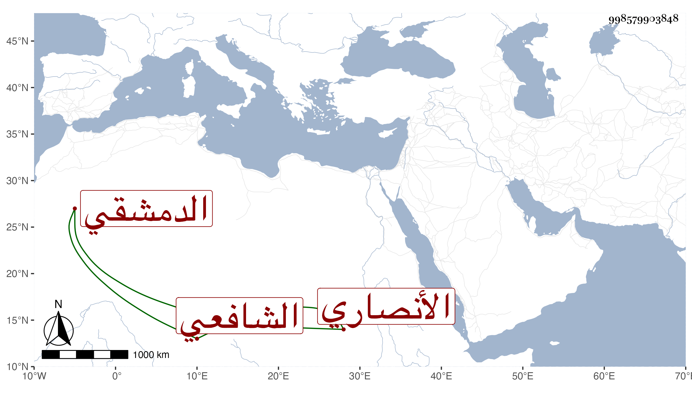

0902Sakhawi.DawLamic.ITO20230111-ara1.EIS1600.998579903848
Biography ID: 998579903848
أحمد بن عبد الله بن محمد بن محمد بن محمد بن عبد القادر بن عبد الخالق بن خليل بن مقلد بن سالم بن جابر محيي الدين أبو اليسر بن التقي بن النور أبي البركات ابن أبي المعالي بن الشرف بن العفيف الأنصاري الدمشقي الشافعي نزيل الصالحية ويعرف بابن الصائع وهو بكنيته أشهر ، ولد في العشر الأخير من جمادى الآولى أو الآخرة سنة تسع وثلاثين وسبعمائة وأحضر على الشهاب أحمد بن علي الجزري وأسمع على أبي عبد الله بن الخباز وأجاز له محمد بن عمر السلاوي وداود بن سليمان خطيب بيت الأبار والشمس بن النقيب وسمع من الحافظ المزي والتقي السبكي والجمال إبراهيم بن الشهاب محمود ومن ابن الوردي البهجة من نظمه وغير ذلك وكذا سمع من أبي الفرج بن عبد الهادي وعبد الرحمن بن أحمد المرداوي والوادياشي وزينب ابنة الكمال وعبد القادر بن القرشية وأكثر ذلك بعناية أبيه فأكثر وتفرد بأشياء سمعها واشتغل قليلا وطلب بنفسه وقرأ على محمد بن أبي بكر بن خليل الإعزازي والصلاح بن أبي عمر مفترقين مشيخة الفخر وكتب الطباق وتخرج قليلا بابن سعد ، وكان حسن المذاكرة ولكنه لم ينجب كما أنه يحب التواريخ والآداب ولكن لم يكن يدرك الوزن . قاله شيخنا في معجمه وحكى ما يشهد لذلك وقال إنه قرأ عليه وكتب عنه أبياتا لابن الوردي وكان عسرا في التحديث وأجاز لابنته وروى لنا عنه مجير الدين الذهبي وشعبان العسقلاني وآخرون ، مات في رمضان سنة سبع وذكره المقريزي في عقوده بحذف محمد الثالث .
